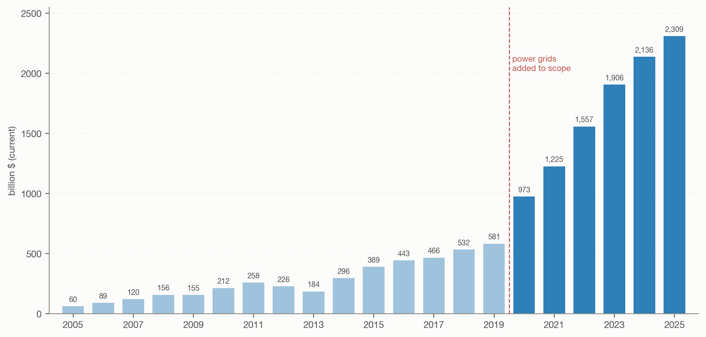
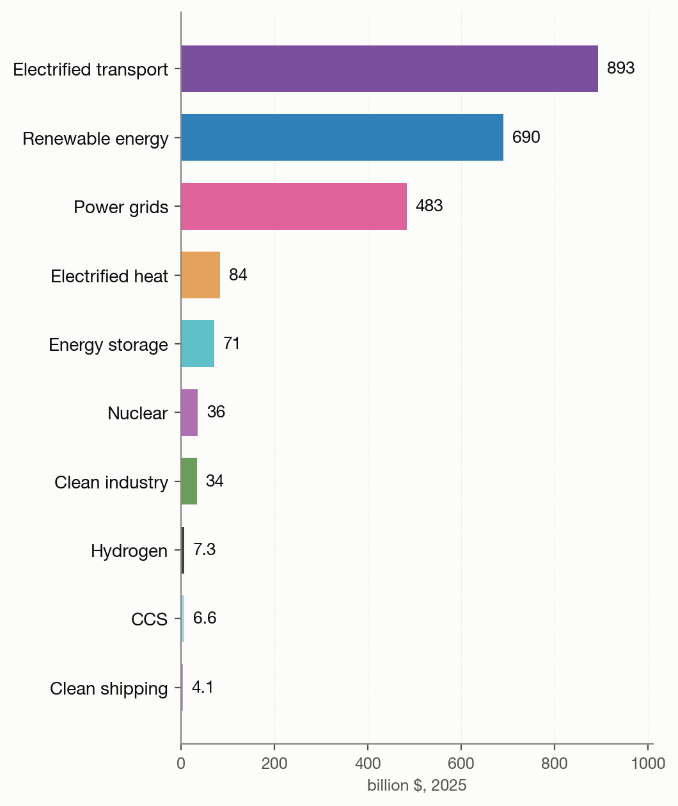
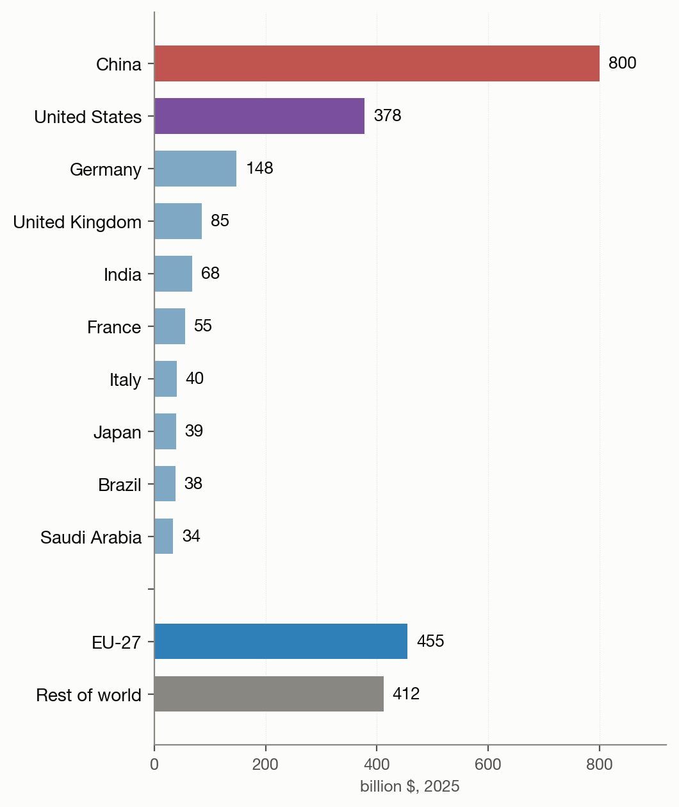
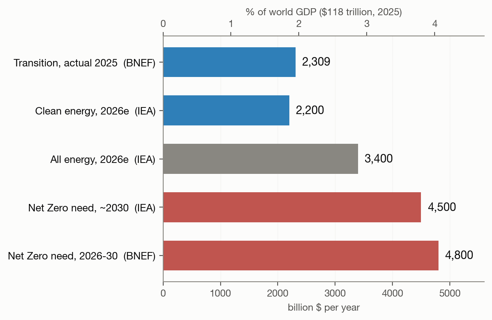

Investir dans la transition énergétique : combien, dans quoi, où, et combien il en faudrait
Combien le monde investit chaque année dans la transition énergétique (environ 2 300 milliards de dollars en 2025, 2 % du PIB mondial, près de 300 dollars par habitant), dans quoi (véhicules électriques, renouvelables et réseaux font près de 90 % ; hydrogène et captage du CO₂ moins de 1 %) et où (la Chine un tiers, l'Europe l'essentiel de la hausse). Comparaison avec les investissements fossiles et avec les besoins des trajectoires de neutralité (à peu près doubler), pour la France aussi, et ce que ces ordres de grandeur changent pour la lecture économique d'un mini-projet : taux, dette, qui paie.
1. La question et la réponse
La question. Combien d’argent le monde met-il chaque année dans la transition énergétique, à quoi sert cet argent, et est-ce assez ?
La réponse, en trois phrases. En 2025, le monde a investi environ 2 300 milliards de dollars dans la transition énergétique, soit à peu près 2 % du produit intérieur brut (PIB) mondial, 2,4 fois plus qu’en 2020. Près de 90 % vont aux véhicules électriques, aux renouvelables et aux réseaux électriques, et la Chine pèse à elle seule un tiers du total. Pour une trajectoire de neutralité carbone, il faudrait à peu près doubler ce montant dès la fin des années 2020.
Le plan. La section 2 donne le vocabulaire. La section 3 suit l’évolution depuis 2005, la section 4 dit dans quoi on investit, la section 5 où. La section 6 compare avec les investissements fossiles, la section 7 avec les besoins des trajectoires climatiques. La section 8 ramène ces montants à un pays et à une personne, la section 9 corrige quelques idées reçues, la section 10 dit ce que ça change pour les mini-projets du cours.
2. Ce qu’on compte, et comment
Un investissement est une dépense faite une fois pour construire un équipement qui servira des années : un parc éolien, une ligne électrique, une voiture électrique. Ce n’est pas une dépense de fonctionnement, comme le combustible ou l’entretien. Pour comparer un investissement à un revenu annuel, on l’étale sur la durée de vie de l’équipement : c’est l’annuité, expliquée dans la note Financer la transition.
La transition énergétique n’a pas de définition unique. Chaque organisme choisit son périmètre, la liste de ce qu’il compte. Deux sources font référence :
- BloombergNEF (BNEF), le bureau d’études énergie de Bloomberg, publie chaque année l’Energy Transition Investment Trends. Il compte les renouvelables, les réseaux, le stockage, le nucléaire, l’hydrogène, le captage du CO₂, la chaleur électrifiée, et aussi l’achat des véhicules électriques.
- L’Agence internationale de l’énergie (AIE) publie chaque année le World Energy Investment. Elle compte toute l’énergie, fossile comprise, et range dans l’« énergie propre » les renouvelables, le nucléaire, les réseaux, le stockage, les carburants bas-carbone, l’efficacité énergétique et l’électrification des usages.
Deux conventions de lecture :
- BNEF compte en dollars courants (la valeur de chaque année), l’AIE en dollars constants de 2025 (corrigés de l’inflation).
- En anglais, un billion vaut un milliard (10⁹), et un trillion vaut mille milliards (10¹²). On note ici Md$ le milliard de dollars et T$ les mille milliards. Les figures, en anglais, sont en billion $.
3. Combien, et comment ça a évolué

| 2005 | 2010 | 2015 | 2019 | 2020 | 2021 | 2022 | 2023 | 2024 | 2025 |
|---|---|---|---|---|---|---|---|---|---|
| 60 | 212 | 389 | 581 | 973 | 1 225 | 1 557 | 1 906 | 2 136 | 2 309 |
Md$ courants (BNEF, 2026).
Trois périodes se lisent sur la figure.
- 2005 à 2011 : le démarrage. L’investissement passe de 60 à 258 Md$. Il recule ensuite jusqu’en 2013 (184 Md$).
- 2014 à 2019 : la croissance régulière. De 296 à 581 Md$. Le nucléaire entre dans le périmètre en 2015.
- 2020 à 2025 : le changement d’échelle. Les réseaux électriques entrent dans le périmètre en 2020. Le saut de 581 à 973 Md$ vient surtout de cet ajout, pas d’un monde qui aurait investi deux fois plus en un an. À périmètre constant, de 2020 à 2025, le montant est multiplié par 2,4.
La croissance ralentit. Elle dépassait 25 % en 2021. Elle tombe à +8,1 % en 2025, première hausse à un seul chiffre depuis 2019 (BNEF, 2026).
4. Dans quoi on investit

| Secteur (BNEF) | Md$ en 2025 | Évolution sur un an |
|---|---|---|
| Transport électrifié (véhicules et bornes de recharge) | 893 | +21 % |
| Énergies renouvelables | 690 | −9,5 % |
| Réseaux électriques | 483 | +17 % |
| Chaleur électrifiée | 84 | en hausse |
| Stockage d’électricité | 71 | en hausse |
| Nucléaire | 36 | en baisse |
| Industrie propre | 34 | en hausse |
| Hydrogène | 7,3 | en baisse |
| Captage et stockage du CO₂ | 6,6 | en hausse |
| Transport maritime propre | 4,1 | en hausse |
| Total | 2 309 | +8,1 % |
Quatre lectures.
- Trois postes font presque tout. Transport électrifié, renouvelables et réseaux totalisent 2 066 Md$, près de 90 % du total.
- Le transport électrifié est devenu le premier poste. C’est surtout l’achat des véhicules électriques, avec les bornes de recharge.
- Les renouvelables reculent en 2025, de 9,5 %. BNEF l’attribue à la réforme du marché électrique chinois. Selon l’AIE, le solaire seul attire encore 365 Md$ en 2026, un milliard de dollars par jour, devant l’éolien (200 Md$) et l’hydraulique (75 Md$).
- L’hydrogène et le captage du CO₂ restent marginaux. Ensemble, moins de 1 % du total, alors qu’ils occupent une large place dans le débat public. Voir les notes Les usages de l’hydrogène et Capter le CO₂.
Un point de comparaison. BNEF estime l’investissement dans les centres de données à environ 500 Md$ en 2025 : plus que le solaire, moins que le transport électrifié. Il n’entre pas dans le total de la transition.
5. Où l’on investit

| Économie | Md$ en 2025 | Évolution sur un an |
|---|---|---|
| Chine | 800 | −4 % |
| Union européenne (27 pays) | 455 | +18 % |
| dont Allemagne | 148 | |
| dont France | 55 | |
| dont Italie | 40 | |
| États-Unis | 378 | +3,5 % |
| Royaume-Uni | 85 | +36 % |
| Inde | 68 | +15 % |
| Japon | 39 | +44 % |
| Brésil | 38 | |
| Arabie saoudite | 34 | +70 % |
| Reste du monde | 412 |
BNEF (2026).
- La Chine reste de loin le premier investisseur,
avec un tiers du total mondial. Elle investit 4 % de son PIB dans la
transition, deux fois la moyenne mondiale. Mais elle recule en 2025,
pour la première fois depuis
- L’Europe fait l’essentiel de la hausse mondiale. L’Union européenne progresse de 18 %. États-Unis, Union européenne et Royaume-Uni réunis (918 Md$) dépassent la Chine.
- De nouveaux pays montent. L’Arabie saoudite entre dans les dix premiers en 2025, avec une hausse de 70 %.
6. Face aux investissements fossiles
Pour comparer avec le pétrole, le gaz et le charbon, il faut l’AIE : BNEF ne compte pas les fossiles.
| AIE, Md$ constants 2025 | 2025 | 2026 (estimation) |
|---|---|---|
| Toute l’énergie | 3 300 | 3 400 |
| dont énergie propre | ≈ 2 200 | ≈ 2 200 |
| dont fossiles | ≈ 1 100 | ≈ 1 200 |
| Réseaux électriques | ≈ 450 | ≈ 550 |
| Stockage par batteries | ≈ 80 | > 100 |
| Nucléaire | > 80 | > 80 |
AIE, World Energy Investment 2026.
- Deux dollars sur trois investis dans l’énergie vont à l’énergie propre : 2 200 sur 3 400 Md$. En 2015, tout l’investissement énergétique mondial valait 2 600 Md$.
- Le fossile n’a pas disparu. En 2026, l’AIE estime à 546 Md$ l’investissement dans l’exploration et la production de pétrole et de gaz, et à 330 Md$ celui dans l’offre de gaz, un record sur dix ans.
- Le charbon remonte. L’investissement dans l’offre de charbon atteint 180 Md$ en 2026, son plus haut niveau depuis 2012, dont plus de 65 % en Chine.
- L’efficacité énergétique (isolation, équipements plus sobres) pèse environ 350 Md$ dans l’énergie propre de l’AIE.
Attention au périmètre. Les 2 200 Md$ d’énergie propre de l’AIE et les 2 309 Md$ de transition de BNEF sont du même ordre, mais ce ne sont pas les mêmes choses. L’AIE compte l’efficacité énergétique ; BNEF compte l’achat des véhicules électriques. On ne les additionne pas et on ne les soustrait pas. Exemple frappant : le nucléaire vaut 36 Md$ chez BNEF et plus de 80 Md$ chez l’AIE.
7. Ce qu’il faudrait investir

Les trajectoires climatiques sont des scénarios : on suppose un objectif (une température, une date de neutralité carbone) et on calcule les équipements à construire chaque année pour l’atteindre. On en déduit un besoin d’investissement annuel.
| Scénario | Md$ par an | Source |
|---|---|---|
| Prolongement des tendances (≈ 2,4 °C en 2100) | 2 900 | BNEF, moyenne 2026-2030 |
| Neutralité carbone (pic à 1,81 °C) | 4 800, puis 7 700 | BNEF, 2026-2030, puis 2031-2035 |
| Neutralité carbone | ≈ 4 500 | AIE, début des années 2030 |
| Limiter le réchauffement à 1,5 °C | ≈ 6 700 | IRENA, périmètre plus large |
IRENA : Agence internationale pour les énergies renouvelables.
Trois lectures.
- Il faudrait à peu près doubler. Les besoins d’une trajectoire de neutralité vont de 4 500 à 4 800 Md$ par an, contre 2 309 réalisés en 2025.
- Même la tendance actuelle demande de croître encore : 2 900 Md$ par an en moyenne sur 2026-2030, et elle mène à un réchauffement d’environ 2,4 °C.
- Le besoin augmente avec le temps. Chez BNEF, il passe de 4 800 à 7 700 Md$ par an entre la fin des années 2020 et le début des années 2030.
Pour BNEF, 1,5 °C n’est plus atteignable. Son scénario de neutralité plafonne à 1,81 °C. Un chiffre qui parle encore de 1,5 °C chez BNEF vient d’une édition ancienne.
8. Ramené à un pays, ramené à une personne
Un montant en milliers de milliards ne parle à personne. Trois façons de le ramener à une échelle lisible.
En part du PIB mondial. Le PIB mondial vaut environ 118 000 Md$ en 2025 (Banque mondiale). Toute l’énergie en représente environ 2,9 %, la transition au sens de BNEF environ 2 %. Le besoin d’une trajectoire de neutralité (4 800 Md$) en représente environ 4 % : il faudrait y consacrer deux points de PIB de plus. La Chine est déjà à 4 %.
Par habitant de la planète. Le monde compte environ 8,1 milliards d’habitants (Our World in Data, 2023). La transition représente donc près de 300 dollars par habitant et par an. Le besoin de neutralité de BNEF en représente environ 600. C’est une moyenne mondiale, très inégale d’un pays à l’autre : la Chine, on l’a vu, investit deux fois la moyenne mondiale en part de PIB.
Pour la France. L’Institut de l’économie pour le climat (I4CE) compte 102 milliards d’euros d’investissements climat en France en 2024, en baisse de 5 %, et environ 103 en 2025. Pour tenir la stratégie nationale bas-carbone (SNBC), la feuille de route climat de la France, il faudrait y ajouter 87 Md€ par an d’ici 2030 : là aussi, presque doubler. Dans le même temps, la France investit encore environ 67,5 Md€ par an dans les fossiles, que la SNBC demande de diviser par deux d’ici 2030 (I4CE, 2025).
Le chiffre de BNEF pour la France (55 Md$) est plus bas que celui d’I4CE : les deux organismes ne comptent pas la même chose, et pas dans la même monnaie.
| Échelle | Réalisé | Besoin | Rapport |
|---|---|---|---|
| Monde, BNEF | 2 309 Md$ (2025) | 4 800 Md$/an (2026-2030) | × 2,1 |
| Monde, en part du PIB | ≈ 2 % | ≈ 4 % | × 2 |
| Par habitant de la planète | ≈ 300 $/an | ≈ 600 $/an | × 2 |
| France, I4CE | 102 Md€ (2024) | + 87 Md€/an (2030) | ≈ × 1,9 |
9. Quelques idées reçues
- « L’investissement dans la transition a bondi de 67 % en 2020. » Non : les réseaux électriques sont entrés dans le décompte cette année-là. Avant de lire une accélération dans une série, on vérifie que son périmètre n’a pas changé.
- « De 2024 à 2025, l’investissement a progressé de 11 %. » C’est ce qu’on obtient en comparant le 2024 de l’édition 2025 de BNEF (2 083 Md$) au 2025 de l’édition 2026 (2 309 Md$). Or BNEF a révisé son 2024 à 2 136 Md$ : la vraie hausse est de 8,1 %. Une série se lit dans une seule édition.
- « Il faut 1 700 milliards par an pour 1,5 °C. » Chiffre périmé. Les estimations à jour vont de 4 500 à 6 700 Md$ par an selon le scénario.
- « La transition, c’est d’abord l’hydrogène et le captage du CO₂. » Pas en argent : ensemble, moins de 1 % de l’investissement de 2025.
- Additionner les sources. BNEF et AIE mesurent à peu près le même argent, avec des périmètres différents. BNEF publie aussi des flux financiers, comme les 1 226 Md$ de dette levée pour la transition en 2025 : c’est le même argent vu du côté de ceux qui le prêtent, pas un supplément.
10. Ce que ça change pour les mini-projets
Les mini-projets du cours étudient chacun un équipement : batteries, électrolyseur, électrification de la vapeur industrielle, interconnexion entre pays. Celui ou celle qui porte la lecture économique du groupe refait le verdict à deux taux d’actualisation, 4 et 8 %, et dit qui paie et qui gagne. Cette note donne trois repères pour ce travail.
Situer l’équipement dans le mouvement mondial. Chaque cas correspond à une ligne du tableau de la section 4 :
| Mini-projet | Secteur BNEF | Md$ en 2025 | Tendance |
|---|---|---|---|
| Batteries | Stockage | 71 | en hausse ; > 100 en 2026 selon l’AIE |
| Électrolyseur | Hydrogène | 7,3 | en baisse, moins de 0,5 % du total |
| Vapeur industrielle | Chaleur électrifiée, industrie propre | 84 et 34 | en hausse |
| Interconnexion | Réseaux électriques | 483 | +17 % ; ≈ 550 en 2026 selon l’AIE |
Un secteur qui croît vite, comme le stockage, installe chaque année beaucoup de capacité nouvelle. C’est la question du cas des batteries : ce que rapporte le n-ième gigawatt quand les autres ont déjà été construits. Un secteur encore petit, comme l’hydrogène, repose sur peu de projets réalisés : les coûts du cas se lisent comme des projections, à discuter.
Comprendre pourquoi le taux compte autant. Renouvelables, réseaux et stockage coûtent surtout à la construction, presque pas en combustible. Leur coût annuel dépend donc beaucoup du taux auquel on emprunte. Une large part de cet argent est d’ailleurs empruntée : BNEF recense 1 226 Md$ de dette levée pour la transition en 2025. Passer de 4 à 8 % peut renverser un verdict ; la note Financer la transition montre comment.
Garder les ordres de grandeur pour la planche « qui paie, qui gagne ». Un projet d’un milliard de dollars, c’est environ 2 % de ce que la France a investi dans la transition en 2025 au sens de BNEF (55 Md$). En France, I4CE estime que l’effort public supplémentaire atteindrait 52 Md€ en 2030 pour la SNBC, ramené à 18 Md€ avec des mesures réglementaires et fiscales. Qui paie, le contribuable, le consommateur par son tarif ou l’industriel, change donc beaucoup la réponse : voir les notes Les tarifs de réseau et Les taxes sur l’énergie.
11. Ce qu’il faut retenir
Le monde investit environ 2 300 milliards de dollars par an dans la transition, environ 2 % de son PIB, près de 300 dollars par habitant. Ce montant a été multiplié par 2,4 de 2020 à 2025, mais sa croissance ralentit (+8,1 % en 2025).
L’argent va surtout aux véhicules électriques, aux renouvelables et aux réseaux, près de 90 % du total. L’hydrogène et le captage du CO₂ font moins de 1 %. La Chine investit un tiers du total mondial, l’Europe fait l’essentiel de la hausse de 2025.
Il faudrait à peu près doubler pour une trajectoire de neutralité carbone : 4 500 à 4 800 Md$ par an au début des années 2030, environ 4 % du PIB mondial. En France aussi, I4CE estime qu’il faudrait presque doubler.
Un chiffre d’investissement ne se lit qu’avec son périmètre. BNEF et l’AIE ne comptent pas la même chose : on ne les additionne pas, on ne compare pas deux éditions d’une même série, et on vérifie qu’un saut n’est pas un changement de décompte.
12. Sources
- AIE, World Energy Investment 2026, mai 2026, résumé exécutif p. 6, https://www.iea.org/reports/world-energy-investment-2026.
- AIE, Net Zero Roadmap, mise à jour de septembre 2023 (besoin d’environ 4 500 Md$ par an au début des années 2030).
- Banque mondiale, PIB mondial 2025 (environ 118 000 Md$).
- BloombergNEF, Energy Transition Investment Trends 2026, résumé public, 27 janvier 2026, p. 3 et 10 à 12, https://assets.bbhub.io/professional/sites/44/1017746-ETIT2026.pdf.
- BloombergNEF, New Energy Outlook 2026, résumé, mai 2026, p. 4 (4,8 T$ par an en 2026-2030, 7,7 T$ en 2031-2035, pic à 1,81 °C).
- I4CE, Panorama des financements climat, édition 2025, p. 4, https://www.i4ce.org/wp-content/uploads/2025/07/Panorama-des-financements-climat-ed-2025_Synthese-et-resultats.pdf.
- IRENA, World Energy Transitions Outlook 2024 (besoin d’environ 6 700 Md$ par an pour 1,5 °C).
- Our World in Data, population mondiale 2023 (8,1 milliards d’habitants).
Les figures sont refaites à partir des chiffres publiés par BloombergNEF, l’AIE et la Banque mondiale.
13. Vidéos, billets et posts sur le même sujet
Des vidéos courtes, des billets de blog et des posts LinkedIn de l’auteur reprennent des points de cette note.
- Transition énergétique : construire les infrastructures sans perdre l’agilité (billet de blog) : les investissements climat de la France (102 Md€ en 2024, à presque doubler d’ici 2030), et la difficulté de coordonner l’offre et la demande.
Télécharger la version PDF (les liens y restent actifs).